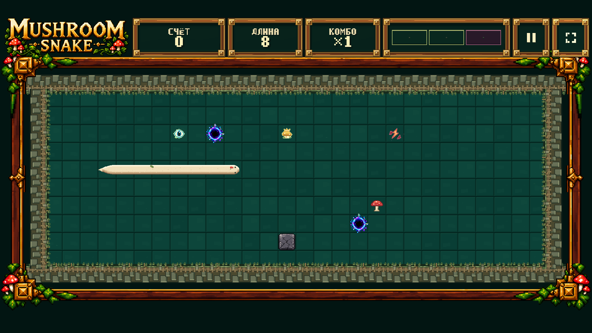
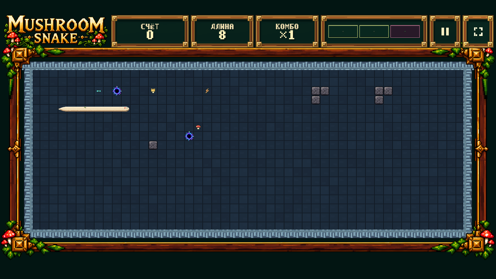
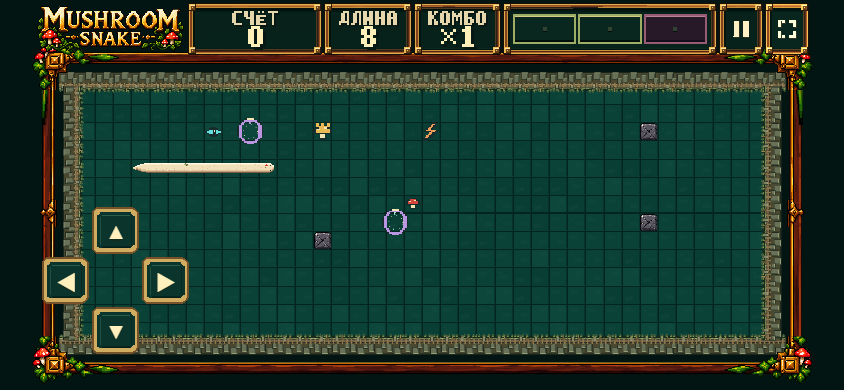
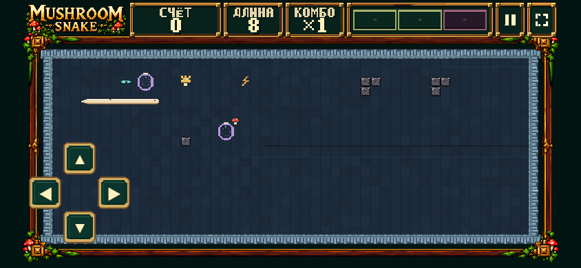
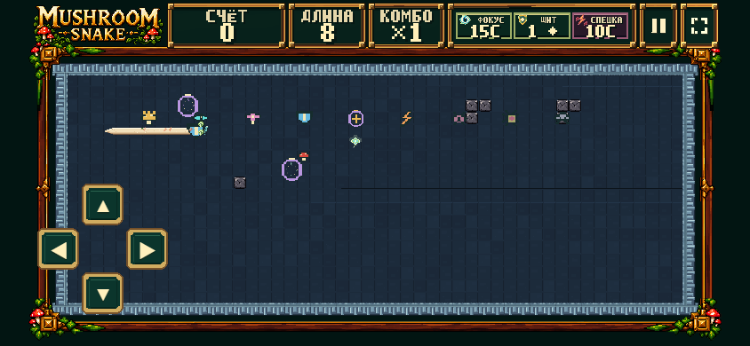

Presentation diagnostic only. No new artwork. All pickup/VFX visuals shown here are rejected, frozen fallback placeholders. Images are shown at native CSS-pixel size; scroll horizontally on smaller screens.
Measurements / tests · Nine-effect asset contract · Playable local DEV




